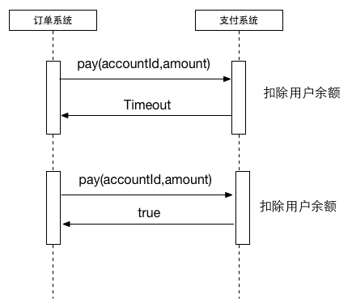
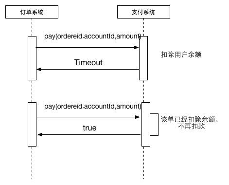
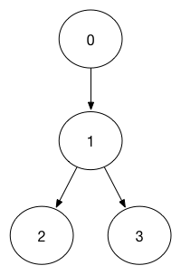

<!DOCTYPE html>
<html>
<head><meta name="generator" content="Hexo 3.8.0">
  <meta charset="utf-8">
  <meta name="baidu-site-verification" content="L6Lm9d5Crl">
  
  
  
  
  <title>接口设计的幂等性考虑 | Jason Blog 主页</title>
  <meta name="viewport" content="width=device-width, initial-scale=1, maximum-scale=1">
  <meta name="description" content="接口设计的幂等性考虑分布式系统接口幂等性1.幂等性定义1.1 数学定义在数学里，幂等有两种主要的定义：- 在某二元运算下，幂等元素是指被自己重复运算(或对于函数是为复合)的结果等于它自己的元素。例如，乘法下唯一两个幂等实数为0和1。即 s *s = s- 某一元运算为幂等的时，其作用在任一元素两次后会和其作用一次的结果相同。例如，高斯符号便是幂等的，即f(f(x)) = f(x)。 1.2 HTT">
<meta property="og:type" content="article">
<meta property="og:title" content="接口设计的幂等性考虑">
<meta property="og:url" content="http://yoursite.com/2019/06/29/接口设计的幂等性考虑/index.html">
<meta property="og:site_name" content="Jason Blog 主页">
<meta property="og:description" content="接口设计的幂等性考虑分布式系统接口幂等性1.幂等性定义1.1 数学定义在数学里，幂等有两种主要的定义：- 在某二元运算下，幂等元素是指被自己重复运算(或对于函数是为复合)的结果等于它自己的元素。例如，乘法下唯一两个幂等实数为0和1。即 s *s = s- 某一元运算为幂等的时，其作用在任一元素两次后会和其作用一次的结果相同。例如，高斯符号便是幂等的，即f(f(x)) = f(x)。 1.2 HTT">
<meta property="og:locale" content="zh-CN">
<meta property="og:image" content="http://yoursite.com/2019/06/29/接口设计的幂等性考虑/10175660-8632b12e6219b2c7.png">
<meta property="og:image" content="http://yoursite.com/2019/06/29/接口设计的幂等性考虑/10175660-2309fde4f12eee56.png">
<meta property="og:image" content="http://yoursite.com/2019/06/29/接口设计的幂等性考虑/10175660-c68743a6b0945bd1.png">
<meta property="og:updated_time" content="2019-06-29T05:30:34.827Z">
<meta name="twitter:card" content="summary">
<meta name="twitter:title" content="接口设计的幂等性考虑">
<meta name="twitter:description" content="接口设计的幂等性考虑分布式系统接口幂等性1.幂等性定义1.1 数学定义在数学里，幂等有两种主要的定义：- 在某二元运算下，幂等元素是指被自己重复运算(或对于函数是为复合)的结果等于它自己的元素。例如，乘法下唯一两个幂等实数为0和1。即 s *s = s- 某一元运算为幂等的时，其作用在任一元素两次后会和其作用一次的结果相同。例如，高斯符号便是幂等的，即f(f(x)) = f(x)。 1.2 HTT">
<meta name="twitter:image" content="http://yoursite.com/2019/06/29/接口设计的幂等性考虑/10175660-8632b12e6219b2c7.png">
  
    <link rel="alternative" href="/atom.xml" title="Jason Blog 主页" type="application/atom+xml">
  
  
    <link rel="icon" href="/img/favicon.png">
  
  
  <link rel="stylesheet" href="//cdn.bootcss.com/animate.css/3.5.0/animate.min.css">
  
  <link rel="stylesheet" href="/css/style.css">
  <link rel="stylesheet" href="/font-awesome/css/font-awesome.min.css">
  <link rel="apple-touch-icon" href="/apple-touch-icon.png">
  
  
      <link rel="stylesheet" href="/fancybox/jquery.fancybox.css">
  
  <!-- 加载特效 -->
    <script src="/js/pace.js"></script>
    <link href="/css/pace/pace-theme-flash.css" rel="stylesheet">
  <script>
      var yiliaConfig = {
          fancybox: true,
          animate: true,
          isHome: false,
          isPost: true,
          isArchive: false,
          isTag: false,
          isCategory: false,
          open_in_new: false
      }
  </script>
</head></html>
<body>
  <div id="container">
    <div class="left-col">
    <div class="overlay"></div>
<div class="intrude-less">
    <header id="header" class="inner">
        
<script src="https://7.url.cn/edu/jslib/comb/require-2.1.6,jquery-1.9.1.min.js"></script>

        <a href="/" class="profilepic">
            
            
            
        </a>
        <hgroup>
          <h1 class="header-author"><a href="/">Jason</a></h1>
        </hgroup>
        
        
            <form>
                <input type="text" class="st-default-search-input search" id="local-search-input" placeholder="搜索一下" autocomplete="off">
            </form>
            <div id="local-search-result"></div>
        
        
            <script type="text/javascript">
                (function() {
                    'use strict';
                    function getMatchData(keyword, data) {
                        var matchData = [];
                        for(var i =0;i<data.length;i++){
                            if(data[i].title.toLowerCase().indexOf(keyword)>=0) 
                                matchData.push(data[i])
                        }
                        return matchData;
                    }
                    var $input = $('#local-search-input');
                    var $resultContent = $('#local-search-result');
                    $input.keyup(function(){
                        $.ajax({
                            url: '/search.json',
                            dataType: "json",
                            success: function( json ) {
                                var str='<ul class=\"search-result-list\">';                
                                var keyword = $input.val().trim().toLowerCase();
                                $resultContent.innerHTML = "";
                                if ($input.val().trim().length <= 0) {
                                    $resultContent.empty();
                                    $('#switch-area').show();
                                    return;
                                }
                                var results = getMatchData(keyword, json);
                                if(results.length === 0){
                                    $resultContent.empty();
                                    $('#switch-area').show();
                                    return;
                                } 
                                for(var i =0; i<results.length; i++){
                                    str += "<li><a href='"+ results[i].url +"' class='search-result-title'>"+ results[i].title +"</a></li>";
                                }
                                str += "</ul>";
                                $resultContent.empty();
                                $resultContent.append(str);
                                $('#switch-area').hide();
                            }
                        });
                    });
                })();
            </script>
        
        
            <div id="switch-btn" class="switch-btn">
                <div class="icon">
                    <div class="icon-ctn">
                        <div class="icon-wrap icon-house" data-idx="0">
                            <div class="birdhouse"></div>
                            <div class="birdhouse_holes"></div>
                        </div>
                        <div class="icon-wrap icon-ribbon hide" data-idx="1">
                            <div class="ribbon"></div>
                        </div>
                        
                        <div class="icon-wrap icon-link hide" data-idx="2">
                            <div class="loopback_l"></div>
                            <div class="loopback_r"></div>
                        </div>
                        
                        
                        <div class="icon-wrap icon-me hide" data-idx="3">
                            <div class="user"></div>
                            <div class="shoulder"></div>
                        </div>
                        
                    </div>
                </div>
                <div class="tips-box hide">
                    <div class="tips-arrow"></div>
                    <ul class="tips-inner">
                        <li>菜单</li>
                        <li>标签</li>
                        
                        <li>友情链接</li>
                        
                        
                        <li>关于我</li>
                        
                    </ul>
                </div>
            </div>
        
        <div id="switch-area" class="switch-area">
            <div class="switch-wrap">
                <section class="switch-part switch-part1">
                    <nav class="header-menu">
                        <ul>
                        
                            <li><a href="/archives/">所有文章</a></li>
                        
                            <li><a href="/categories/开发工具/">玩转开发工具</a></li>
                        
                            <li><a href="/categories/digital">玩转数码</a></li>
                        
                            <li><a href="/categories/algorithm">算法学习</a></li>
                        
                            <li><a href="/about/">关于我</a></li>
                        
                        </ul>
                    </nav>
                    <nav class="header-nav">
                        <ul class="social">
                            
                                <a class="fl github" target="_blank" href="https://github.com/JasonWang0911/" title="github">github</a>
                            
                                <a class="fl rss" target="_blank" href="/atom.xml" title="rss">rss</a>
                            
                        </ul>
                    </nav>
                </section>
                
                <section class="switch-part switch-part2">
                    <div class="widget tagcloud" id="js-tagcloud">
                        
                    </div>
                </section>
                
                
                <section class="switch-part switch-part3">
                    <div id="js-friends">
                    
                      <a target="_blank" class="main-nav-link switch-friends-link" href="http://blog.csdn.net/baidu_21483933">csdn</a>
                    
                      <a target="_blank" class="main-nav-link switch-friends-link" href="https://segmentfault.com/blog/maocg_web">segmentfault</a>
                    
                      <a target="_blank" class="main-nav-link switch-friends-link" href="http://www.jianshu.com/users/eb37ef89c746/latest_articles">简书</a>
                    
                    </div>
                </section>
                
                
                
                <section class="switch-part switch-part4">
                
                    <div id="js-aboutme">爱动漫,爱游戏,爱编程,爱运动,爱的太多了!</div>
                </section>
                
            </div>
        </div>
    </header>
</div>

    </div>
    <div class="mid-col">
      <nav id="mobile-nav">
      <div class="overlay">
          <div class="slider-trigger"></div>
          <h1 class="header-author js-mobile-header hide"><a href="/" title="回到主页">Jason</a></h1>
      </div>
    <div class="intrude-less">
        <header id="header" class="inner">
            <a href="/" class="profilepic">
                
                    
                
            </a>
            <hgroup>
              <h1 class="header-author"><a href="/" title="回到主页">Jason</a></h1>
            </hgroup>
            
            <nav class="header-menu">
                <ul>
                
                    <li><a href="/archives/">所有文章</a></li>
                
                    <li><a href="/categories/开发工具/">玩转开发工具</a></li>
                
                    <li><a href="/categories/digital">玩转数码</a></li>
                
                    <li><a href="/categories/algorithm">算法学习</a></li>
                
                    <li><a href="/about/">关于我</a></li>
                
                <div class="clearfix"></div>
                </ul>
            </nav>
            <nav class="header-nav">
                <div class="social">
                    
                        <a class="github" target="_blank" href="https://github.com/JasonWang0911/" title="github">github</a>
                    
                        <a class="rss" target="_blank" href="/atom.xml" title="rss">rss</a>
                    
                </div>
            </nav>
        </header>
    </div>
</nav>
      <div class="body-wrap"><article id="post-接口设计的幂等性考虑" class="article article-type-post" itemscope itemprop="blogPost">
  
    <div class="article-meta">
      <a href="/2019/06/29/接口设计的幂等性考虑/" class="article-date">
      <time datetime="2019-06-29T04:39:04.000Z" itemprop="datePublished">2019-06-29</time>
</a>

    </div>
  
  <div class="article-inner">
    
      <input type="hidden" class="isFancy">
    
    
      <header class="article-header">
        
  
    <h1 class="article-title" itemprop="name">
      接口设计的幂等性考虑
    </h1>
  


      </header>
      
      <div class="article-info article-info-post">
        

        
        <div class="clearfix"></div>
      </div>
      
    
    <div class="article-entry" itemprop="articleBody">
      
          
        <h1 id="接口设计的幂等性考虑"><a href="#接口设计的幂等性考虑" class="headerlink" title="接口设计的幂等性考虑"></a>接口设计的幂等性考虑</h1><h2 id="分布式系统接口幂等性"><a href="#分布式系统接口幂等性" class="headerlink" title="分布式系统接口幂等性"></a>分布式系统接口幂等性</h2><h3 id="1-幂等性定义"><a href="#1-幂等性定义" class="headerlink" title="1.幂等性定义"></a>1.幂等性定义</h3><h4 id="1-1-数学定义"><a href="#1-1-数学定义" class="headerlink" title="1.1 数学定义"></a>1.1 数学定义</h4><pre><code>在数学里，幂等有两种主要的定义：- 在某二元运算下，幂等元素是指被自己重复运算(或对于函数是为复合)的结果等于它自己的元素。例如，乘法下唯一两个幂等实数为0和1。即 s *s = s- 某一元运算为幂等的时，其作用在任一元素两次后会和其作用一次的结果相同。例如，高斯符号便是幂等的，即f(f(x)) = f(x)。
</code></pre><h4 id="1-2-HTTP规范的定义"><a href="#1-2-HTTP规范的定义" class="headerlink" title="1.2 HTTP规范的定义"></a>1.2 HTTP规范的定义</h4><p>在HTTP/1.1规范中幂等性的定义是：</p>
<pre><code>A request method is considered &quot;idempotent&quot; if the intended effect on the server of multiple identical requests with that method is the same as the effect for a single such request. Of the request methods defined by this specification, PUT, DELETE, and safe request methods are idempotent.
</code></pre><p>HTTP的幂等性指的是一次和多次请求某一个资源应该具有相同的副作用。如通过PUT接口将数据的Status置为1，无论是第一次执行还是多次执行，获取到的结果应该是相同的，即执行完成之后Status =1。</p>
<h3 id="2-何种接口提供幂等性"><a href="#2-何种接口提供幂等性" class="headerlink" title="2. 何种接口提供幂等性"></a>2. 何种接口提供幂等性</h3><h4 id="2-1-HTTP支持幂等性的接口"><a href="#2-1-HTTP支持幂等性的接口" class="headerlink" title="2.1 HTTP支持幂等性的接口"></a>2.1 HTTP支持幂等性的接口</h4><p>在HTTP规范中定义GET,PUT和DELETE方法应该具有幂等性。</p>
<ul>
<li><p>GET方法</p>
<p>  The GET method requests transfer of a current selected representation for the target resource,GET is the primary mechanism of information retrieval and the focus of almost all performance optimizations. Hence, when people speak of retrieving some identifiable information via HTTP, they are generally referring to making a GET request.</p>
</li>
</ul>
<p>GET方法是向服务器查询，不会对系统产生副作用，具有幂等性（不代表每次请求都是相同的结果)</p>
<ul>
<li><p>PUT方法</p>
<p>  The PUT method requests that the state of the target resource be created or replaced with the state defined by the representation enclosed in the request message payload.</p>
</li>
</ul>
<p>也就是说PUT方法首先判断系统中是否有相关的记录，如果有记录则更新该记录，如果没有则新增记录。</p>
<ul>
<li><p>DELETE 方法</p>
<p>  The DELETE method requests that the origin server remove the association between the target resource and its current functionality. In effect, this method is similar to the rm command in UNIX: it expresses a deletion operation on the URI mapping of the origin server rather than an expectation that the previously associated information be deleted.</p>
</li>
</ul>
<p>DELETE方法是删除服务器上的相关记录。</p>
<h4 id="2-2-实际业务"><a href="#2-2-实际业务" class="headerlink" title="2.2 实际业务"></a>2.2 实际业务</h4><p>现在简化为这样一个系统，用户购买商品的订单系统与支付系统；订单系统负责记录用户的购买记录已经订单的流转状态（orderStatus),支付系统用于付款，提供</p>
<figure class="highlight java"><table><tr><td class="gutter"><pre><span class="line">1</span><br><span class="line">2</span><br></pre></td><td class="code"><pre><span class="line"></span><br><span class="line"><span class="function"><span class="keyword">boolean</span> <span class="title">pay</span><span class="params">(<span class="keyword">int</span> accountid,BigDecimal amount)</span> <span class="comment">//用于付款，扣除用户的</span></span></span><br></pre></td></tr></table></figure>
<p>接口，订单系统与支付系统通过分布式网络交互。</p>
<p></p>
<p>订单幂等性</p>
<p>这种情况下，支付系统已经扣款，但是订单系统因为网络原因，没有获取到确切的结果，因此订单系统需要重试。由上图可见，支付系统并没有做到接口的幂等性，订单系统第一次调用和第二次调用，用户分别被扣了两次钱，不符合幂等性原则（同一个订单，无论是调用了多少次，用户都只会扣款一次）。如果需要支持幂等性，付款接口需要修改为以下接口：</p>
<figure class="highlight java"><table><tr><td class="gutter"><pre><span class="line">1</span><br></pre></td><td class="code"><pre><span class="line"><span class="function"><span class="keyword">boolean</span> <span class="title">pay</span><span class="params">(<span class="keyword">int</span> orderId,<span class="keyword">int</span> accountId,BigDecimal amount)</span></span></span><br></pre></td></tr></table></figure>
<p>通过orderId来标定订单的唯一性，付款系统只要检测到订单已经支付过，则第二次调用不会扣款而会直接返回结果：</p>
<p></p>
<p>订单支持幂等</p>
<p>在不同的业务中不同接口需要有不同的幂等性，特别是在分布式系统中，因为网络原因而未能得到确定的结果，往往需要支持接口幂等性。</p>
<h3 id="3-分布式系统接口幂等性"><a href="#3-分布式系统接口幂等性" class="headerlink" title="3.分布式系统接口幂等性"></a>3.分布式系统接口幂等性</h3><p>随着分布式系统及微服务的普及，因为网络原因而导致调用系统未能获取到确切的结果从而导致重试，这就需要被调用系统具有幂等性。例如上文所阐述的支付系统，针对同一个订单保证支付的幂等性，一旦订单的支付状态确定之后，以后的操作都会返回相同的结果，对用户的扣款也只会有一次。这种接口的幂等性，简化到数据层面的操作：</p>
<figure class="highlight java"><table><tr><td class="gutter"><pre><span class="line">1</span><br></pre></td><td class="code"><pre><span class="line">update userAmount set amount =  <span class="string">'value'</span> ,paystatus = <span class="string">'paid'</span> where orderId= <span class="string">'orderid'</span> and paystatus = <span class="string">'unpay'</span></span><br></pre></td></tr></table></figure>
<p>其中value是用户要减少的订单，paystatus代表支付状态，paid代表已经支付，unpay代表未支付，orderid是订单号。在上文中提到的订单系统，订单具有自己的状态（orderStatus),订单状态存在一定的流转。订单首先有提交（0），付款中（1），付款成功（2），付款失败（3），简化之后其流转路径如图：</p>
<p></p>
<p>订单状态流转的幂等性</p>
<p>当orderStatus = 1 时，其前置状态只能是0，也就是说将orderStatus由0-&gt;1 是需要幂等性的</p>
<figure class="highlight java"><table><tr><td class="gutter"><pre><span class="line">1</span><br></pre></td><td class="code"><pre><span class="line">update Order set orderStatus = <span class="number">1</span> where OrderId = <span class="string">'orderid'</span> and orderStatus = <span class="number">0</span></span><br></pre></td></tr></table></figure>
<p>当orderStatus 处于0，1两种状态时，对订单执行0-&gt;1 的状态流转操作应该是具有幂等性的。这时候需要在执行update操作之前检测orderStatus是否已经=1，如果已经=1则直接返回true即可。</p>
<p>但是如果此时orderStatus = 2,再进行订单状态0-&gt;1 时操作就无法成功，但是幂等性是针对同一个请求的，也就是针对同一个requestid保持幂等。</p>
<p>这时候再执行</p>
<figure class="highlight java"><table><tr><td class="gutter"><pre><span class="line">1</span><br><span class="line">2</span><br></pre></td><td class="code"><pre><span class="line"></span><br><span class="line">update Order set orderStatus = <span class="number">1</span> where OrderId = <span class="string">'orderid'</span> and orderStatus = <span class="number">0</span></span><br></pre></td></tr></table></figure>
<p>接口会返回失败，系统没有产生修改，如果再发一次，requestid是相同的，对系统同样没有产生修改。</p>
<h3 id="4-解决方案"><a href="#4-解决方案" class="headerlink" title="4.解决方案"></a>4.解决方案</h3><p>在微服务架构下，我们在完成一个订单流程时经常遇到下面的场景：</p>
<pre><code>1. 一个订单创建接口，第一次调用超时了，然后调用方重试了一次
2. 在订单创建时，我们需要去扣减库存，这时接口发生了超时，调用方重试了一次
3. 当这笔订单开始支付，在支付请求发出之后，在服务端发生了扣钱操作，接口响应超时了，调用方重试了一次
4. 一个订单状态更新接口，调用方连续发送了两个消息，一个是已创建，一个是已付款。但是你先接收到已付款，然后又接收到了已创建
5. 在支付完成订单之后，需要发送一条短信，当一台机器接收到短信发送的消息之后，处理较慢。消息中间件又把消息投递给另外一台机器处理
</code></pre><p>以上问题，就是在单体架构转成微服务架构之后，带来的问题。当然不是说单体架构下没有这些问题，在单体架构下同样要避免重复请求。但是出现的问题要比这少得多。</p>
<p>为了解决以上问题，就需要保证接口的幂等性，接口的幂等性实际上就是接口可重复调用，在调用方多次调用的情况下，接口最终得到的结果是一致的。有些接口可以天然的实现幂等性，比如查询接口，对于查询来说，你查询一次和两次，对于系统来说，没有任何影响，查出的结果也是一样。</p>
<p>除了查询功能具有天然的幂等性之外，增加、更新、删除都要保证幂等性。那么如何来保证幂等性呢？</p>
<h3 id="全局唯一ID"><a href="#全局唯一ID" class="headerlink" title="全局唯一ID"></a>全局唯一ID</h3><p>如果使用全局唯一ID，就是根据业务的操作和内容生成一个全局ID，在执行操作前先根据这个全局唯一ID是否存在，来判断这个操作是否已经执行。如果不存在则把全局ID，存储到存储系统中，比如数据库、redis等。如果存在则表示该方法已经执行。</p>
<p>从工程的角度来说，使用全局ID做幂等可以作为一个业务的基础的微服务存在，在很多的微服务中都会用到这样的服务，在每个微服务中都完成这样的功能，会存在工作量重复。另外打造一个高可靠的幂等服务还需要考虑很多问题，比如一台机器虽然把全局ID先写入了存储，但是在写入之后挂了，这就需要引入全局ID的超时机制。</p>
<p>使用全局唯一ID是一个通用方案，可以支持插入、更新、删除业务操作。但是这个方案看起来很美但是实现起来比较麻烦，下面的方案适用于特定的场景，但是实现起来比较简单。</p>
<h3 id="去重表"><a href="#去重表" class="headerlink" title="去重表"></a>去重表</h3><p>这种方法适用于在业务中有唯一标的插入场景中，比如在以上的支付场景中，如果一个订单只会支付一次，所以订单ID可以作为唯一标识。这时，我们就可以建一张去重表，并且把唯一标识作为唯一索引，在我们实现时，把创建支付单据和写入去去重表，放在一个事务中，如果重复创建，数据库会抛出唯一约束异常，操作就会回滚。</p>
<h3 id="插入或更新"><a href="#插入或更新" class="headerlink" title="插入或更新"></a>插入或更新</h3><p>这种方法插入并且有唯一索引的情况，比如我们要关联商品品类，其中商品的ID和品类的ID可以构成唯一索引，并且在数据表中也增加了唯一索引。这时就可以使用InsertOrUpdate操作。在mysql数据库中如下：</p>
<figure class="highlight java"><table><tr><td class="gutter"><pre><span class="line">1</span><br><span class="line">2</span><br><span class="line">3</span><br><span class="line">4</span><br><span class="line">5</span><br></pre></td><td class="code"><pre><span class="line"></span><br><span class="line"><span class="function">insert into <span class="title">goods_category</span> <span class="params">(goods_id,category_id,create_time,update_time)</span> </span></span><br><span class="line"><span class="function">       <span class="title">values</span><span class="params">(#&#123;goodsId&#125;,#&#123;categoryId&#125;,now()</span>,<span class="title">now</span><span class="params">()</span>) </span></span><br><span class="line"><span class="function">       on DUPLICATE KEY UPDATE</span></span><br><span class="line"><span class="function">       update_time</span>=now()</span><br></pre></td></tr></table></figure>
<h3 id="多版本控制"><a href="#多版本控制" class="headerlink" title="多版本控制"></a>多版本控制</h3><p>这种方法适合在更新的场景中，比如我们要更新商品的名字，这时我们就可以在更新的接口中增加一个版本号，来做幂等</p>
<figure class="highlight"><table><tr><td class="gutter"><pre><span class="line">1</span><br><span class="line">2</span><br><span class="line">3</span><br><span class="line">4</span><br><span class="line">5</span><br><span class="line">6</span><br><span class="line">7</span><br><span class="line">8</span><br><span class="line">9</span><br><span class="line">10</span><br></pre></td><td class="code"><pre><span class="line"></span><br><span class="line"><span class="function"><span class="keyword">boolean</span> <span class="title">updateGoodsName</span><span class="params">(<span class="keyword">int</span> id,String newName,<span class="keyword">int</span> version)</span></span>;</span><br><span class="line"></span><br><span class="line">``` </span><br><span class="line"></span><br><span class="line">在实现时可以如下</span><br><span class="line"></span><br><span class="line">``` java</span><br><span class="line"></span><br><span class="line">update goods set name=#&#123;newName&#125;,version=#&#123;version&#125; where id=#&#123;id&#125; and version&lt;$&#123;version&#125;</span><br></pre></td></tr></table></figure>
<h3 id="状态机控制"><a href="#状态机控制" class="headerlink" title="状态机控制"></a>状态机控制</h3><p>这种方法适合在有状态机流转的情况下，比如就会订单的创建和付款，订单的付款肯定是在之前，这时我们可以通过在设计状态字段时，使用int类型，并且通过值类型的大小来做幂等，比如订单的创建为0，付款成功为100。付款失败为99</p>
<p>在做状态机更新时，我们就这可以这样控制</p>
<figure class="highlight"><table><tr><td class="gutter"><pre><span class="line">1</span><br><span class="line">2</span><br></pre></td><td class="code"><pre><span class="line"></span><br><span class="line">update `order` set status=#&#123;status&#125; where id=#&#123;id&#125; and status&lt;#&#123;status&#125;</span><br></pre></td></tr></table></figure>
<p>以上就是保证接口幂等性的一些方法。</p>

      
    </div>
    
  </div>
  
    
    <div class="copyright">
        <p><span>本文标题:</span><a href="/2019/06/29/接口设计的幂等性考虑/">接口设计的幂等性考虑</a></p>
        <p><span>文章作者:</span><a href="/" title="访问 Jason 的个人博客">Jason</a></p>
        <p><span>发布时间:</span>2019年06月29日 - 12时39分</p>
        <p><span>最后更新:</span>2019年06月29日 - 13时30分</p>
        <p>
            <span>原始链接:</span><a class="post-url" href="/2019/06/29/接口设计的幂等性考虑/" title="接口设计的幂等性考虑">http://yoursite.com/2019/06/29/接口设计的幂等性考虑/</a>
            <span class="copy-path" data-clipboard-text="原文: http://yoursite.com/2019/06/29/接口设计的幂等性考虑/　　作者: Jason" title></span>
        </p>
        <p>
            <span>许可协议:</span><i class="fa fa-creative-commons"></i> <a rel="license" href="http://creativecommons.org/licenses/by-nc-sa/3.0/cn/" title="中国大陆 (CC BY-NC-SA 3.0 CN)" target="_blank">"署名-非商用-相同方式共享 3.0"</a> 转载请保留原文链接及作者。
        </p>
    </div>


<nav id="article-nav">
  
    <a href="/2019/07/27/浅谈java注解/" id="article-nav-newer" class="article-nav-link-wrap">
      <strong class="article-nav-caption"><</strong>
      <div class="article-nav-title">
        
          浅谈java注解
        
      </div>
    </a>
  
  
    <a href="/2019/06/06/SpringBoot统一异常处理/" id="article-nav-older" class="article-nav-link-wrap">
      <div class="article-nav-title">SpringBoot统一异常处理</div>
      <strong class="article-nav-caption">></strong>
    </a>
  
</nav>


  
</article>

    <div id="toc" class="toc-article">
    <strong class="toc-title">文章目录</strong>
    <ol class="toc"><li class="toc-item toc-level-1"><a class="toc-link" href="#接口设计的幂等性考虑"><span class="toc-number">1.</span> <span class="toc-text">接口设计的幂等性考虑</span></a><ol class="toc-child"><li class="toc-item toc-level-2"><a class="toc-link" href="#分布式系统接口幂等性"><span class="toc-number">1.1.</span> <span class="toc-text">分布式系统接口幂等性</span></a><ol class="toc-child"><li class="toc-item toc-level-3"><a class="toc-link" href="#1-幂等性定义"><span class="toc-number">1.1.1.</span> <span class="toc-text">1.幂等性定义</span></a><ol class="toc-child"><li class="toc-item toc-level-4"><a class="toc-link" href="#1-1-数学定义"><span class="toc-number">1.1.1.1.</span> <span class="toc-text">1.1 数学定义</span></a></li><li class="toc-item toc-level-4"><a class="toc-link" href="#1-2-HTTP规范的定义"><span class="toc-number">1.1.1.2.</span> <span class="toc-text">1.2 HTTP规范的定义</span></a></li></ol></li><li class="toc-item toc-level-3"><a class="toc-link" href="#2-何种接口提供幂等性"><span class="toc-number">1.1.2.</span> <span class="toc-text">2. 何种接口提供幂等性</span></a><ol class="toc-child"><li class="toc-item toc-level-4"><a class="toc-link" href="#2-1-HTTP支持幂等性的接口"><span class="toc-number">1.1.2.1.</span> <span class="toc-text">2.1 HTTP支持幂等性的接口</span></a></li><li class="toc-item toc-level-4"><a class="toc-link" href="#2-2-实际业务"><span class="toc-number">1.1.2.2.</span> <span class="toc-text">2.2 实际业务</span></a></li></ol></li><li class="toc-item toc-level-3"><a class="toc-link" href="#3-分布式系统接口幂等性"><span class="toc-number">1.1.3.</span> <span class="toc-text">3.分布式系统接口幂等性</span></a></li><li class="toc-item toc-level-3"><a class="toc-link" href="#4-解决方案"><span class="toc-number">1.1.4.</span> <span class="toc-text">4.解决方案</span></a></li><li class="toc-item toc-level-3"><a class="toc-link" href="#全局唯一ID"><span class="toc-number">1.1.5.</span> <span class="toc-text">全局唯一ID</span></a></li><li class="toc-item toc-level-3"><a class="toc-link" href="#去重表"><span class="toc-number">1.1.6.</span> <span class="toc-text">去重表</span></a></li><li class="toc-item toc-level-3"><a class="toc-link" href="#插入或更新"><span class="toc-number">1.1.7.</span> <span class="toc-text">插入或更新</span></a></li><li class="toc-item toc-level-3"><a class="toc-link" href="#多版本控制"><span class="toc-number">1.1.8.</span> <span class="toc-text">多版本控制</span></a></li><li class="toc-item toc-level-3"><a class="toc-link" href="#状态机控制"><span class="toc-number">1.1.9.</span> <span class="toc-text">状态机控制</span></a></li></ol></li></ol></li></ol>
</div>
<style>
    .left-col .switch-btn {
        display: none;
    }
    .left-col .switch-area {
        display: none;
    }
</style>
<input type="button" id="tocButton" value="隐藏目录" title="点击按钮隐藏或者显示文章目录">

<script src="https://7.url.cn/edu/jslib/comb/require-2.1.6,jquery-1.9.1.min.js"></script>

<script>
    var valueHide = "隐藏目录";
    var valueShow = "显示目录";
    if ($(".left-col").is(":hidden")) {
        $("#tocButton").attr("value", valueShow);
    }
    $("#tocButton").click(function() {
        if ($("#toc").is(":hidden")) {
            $("#tocButton").attr("value", valueHide);
            $("#toc").slideDown(320);
            $(".switch-btn, .switch-area").fadeOut(300);
        }
        else {
            $("#tocButton").attr("value", valueShow);
            $("#toc").slideUp(350);
            $(".switch-btn, .switch-area").fadeIn(500);
        }
    })
    if ($(".toc").length < 1) {
        $("#toc, #tocButton").hide();
        $(".switch-btn, .switch-area").show();
    }
</script>


<div class="bdsharebuttonbox">
	<a href="#" class="fx fa-weibo bds_tsina" data-cmd="tsina" title="分享到新浪微博"></a>
	<a href="#" class="fx fa-weixin bds_weixin" data-cmd="weixin" title="分享到微信"></a>
	<a href="#" class="fx fa-qq bds_sqq" data-cmd="sqq" title="分享到QQ好友"></a>
	<a href="#" class="fx fa-facebook-official bds_fbook" data-cmd="fbook" title="分享到Facebook"></a>
	<a href="#" class="fx fa-twitter bds_twi" data-cmd="twi" title="分享到Twitter"></a>
	<a href="#" class="fx fa-linkedin bds_linkedin" data-cmd="linkedin" title="分享到linkedin"></a>
	<a href="#" class="fx fa-files-o bds_copy" data-cmd="copy" title="分享到复制网址"></a>
</div>
<script>window._bd_share_config={"common":{"bdSnsKey":{},"bdText":"","bdMini":"2","bdMiniList":false,"bdPic":"","bdStyle":"2","bdSize":"24"},"share":{}};with(document)0[(getElementsByTagName('head')[0]||body).appendChild(createElement('script')).src='http://bdimg.share.baidu.com/static/api/js/share.js?v=89860593.js?cdnversion='+~(-new Date()/36e5)];</script>


    
        <section class="changyan" id="comments">
  <!--<div id="uyan_frame"></div>-->
  <div id="SOHUCS"></div>
  <script charset="utf-8" type="text/javascript" src="https://changyan.sohu.com/upload/changyan.js"></script>
  <script type="text/javascript">
    window.changyan.api.config({
      appid: 'xxxx',
      conf: 'xxxxxxxxx'
    });
  </script>
</section>
    


    <div class="scroll" id="post-nav-button">
        
            <a href="/2019/07/27/浅谈java注解/" title="上一篇: 浅谈java注解">
                <i class="fa fa-angle-left"></i>
            </a>
        
        <a title="文章列表"><i class="fa fa-bars"></i><i class="fa fa-times"></i></a>
        
            <a href="/2019/06/06/SpringBoot统一异常处理/" title="下一篇: SpringBoot统一异常处理">
                <i class="fa fa-angle-right"></i>
            </a>
        
    </div>
    <ul class="post-list"><li class="post-list-item"><a class="post-list-link" href="/2019/07/27/浅谈java注解/">浅谈java注解</a></li><li class="post-list-item"><a class="post-list-link" href="/2019/06/29/接口设计的幂等性考虑/">接口设计的幂等性考虑</a></li><li class="post-list-item"><a class="post-list-link" href="/2019/06/06/SpringBoot统一异常处理/">SpringBoot统一异常处理</a></li><li class="post-list-item"><a class="post-list-link" href="/2019/06/06/Go 语言递归函数/">Go 语言递归函数</a></li><li class="post-list-item"><a class="post-list-link" href="/2019/06/04/java8新特性Optional深度解析/">java8新特性Optional深度解析</a></li><li class="post-list-item"><a class="post-list-link" href="/2019/05/31/RabbiMQ原理与SpringBoot使用/">RabbiMQ原理与SpringBoot使用</a></li><li class="post-list-item"><a class="post-list-link" href="/2019/05/24/35个可以提高效率的Java代码小技巧/">35个可以提高效率的Java代码小技巧</a></li><li class="post-list-item"><a class="post-list-link" href="/2019/05/17/Go语言并发/">Go语言并发</a></li><li class="post-list-item"><a class="post-list-link" href="/2019/05/10/Go语言接口/">Go语言接口</a></li></ul>
    
<script src="https://7.url.cn/edu/jslib/comb/require-2.1.6,jquery-1.9.1.min.js"></script>

    <script>
        $(".post-list").addClass("toc-article");
        // $(".post-list-item a").attr("target","_blank");
        $("#post-nav-button > a:nth-child(2)").click(function() {
            $(".fa-bars, .fa-times").toggle();
            $(".post-list").toggle(300);
            if ($(".toc").length > 0) {
                $("#toc, #tocButton").toggle(200, function() {
                    if ($(".switch-area").is(":visible")) {
                        $("#toc, .switch-btn, .switch-area").toggle();
                        $("#tocButton").attr("value", valueHide);
                        }
                    })
            }
            else {
                $(".switch-btn, .switch-area").fadeToggle(300);
            }
        })
    </script>


    <script>
        
    </script>

</div>
      <footer id="footer">
    <div class="outer">
        <div id="footer-info">
            <div class="footer-left">
                &copy; 2019 Jason
            </div>
            <div class="footer-right">
                <a href="http://hexo.io/" target="_blank">Hexo &nbsp;&nbsp;</a><a href="https://github.com/maochunguang" target="_blank">Blog</a> by tommy
            </div>
        </div>
        
            <div class="visit">
                
                    <span id="busuanzi_container_site_pv" style="display:none">
                        <span id="site-visit">极客到访数: 
                            <span id="busuanzi_value_site_uv"></span>
                        </span>
                    </span>
                
                
                    <span>, </span>
                
                
                    <span id="busuanzi_container_page_pv" style="display:none">
                        <span id="page-visit">本页阅读量: 
                            <span id="busuanzi_value_page_pv"></span>
                        </span>
                    </span>
                
            </div>
        
    </div>
</footer>

    </div>
    
<script src="https://7.url.cn/edu/jslib/comb/require-2.1.6,jquery-1.9.1.min.js"></script>

<script src="/js/main.js"></script>

    <script>
        $(document).ready(function() {
            var backgroundnum = 1;
            var backgroundimg = "url(/background/bg-x.jpg)".replace(/x/gi, Math.ceil(Math.random() * backgroundnum));
            $("#mobile-nav").css({"background-image": backgroundimg,"background-size": "cover","background-position": "center"});
            $(".left-col").css({"background-image": backgroundimg,"background-size": "cover","background-position": "center"});
        })
    </script>


<!-- Google Analytics -->
<script type="text/javascript">
(function(i,s,o,g,r,a,m){i['GoogleAnalyticsObject']=r;i[r]=i[r]||function(){
(i[r].q=i[r].q||[]).push(arguments)},i[r].l=1*new Date();a=s.createElement(o),
m=s.getElementsByTagName(o)[0];a.async=1;a.src=g;m.parentNode.insertBefore(a,m)
})(window,document,'script','//www.google-analytics.com/analytics.js','ga');

ga('create', 'xxxxx', 'auto');
ga('send', 'pageview');

</script>
<!-- End Google Analytics -->


	<script>
	var _hmt = _hmt || [];
	(function() {
	  var hm = document.createElement("script");
	  hm.src = "//hm.baidu.com/hm.js?xxxxxx";
	  var s = document.getElementsByTagName("script")[0]; 
	  s.parentNode.insertBefore(hm, s);
	})();
	</script>


<div class="scroll" id="scroll">
    <a href="#"><i class="fa fa-arrow-up"></i></a>
    <a href="#comments"><i class="fa fa-comments-o"></i></a>
    <a href="#footer"><i class="fa fa-arrow-down"></i></a>
</div>
<script>
    $(document).ready(function() {
        if ($("#comments").length < 1) {
            $("#scroll > a:nth-child(2)").hide();
        };
    })
</script>

<script async src="https://dn-lbstatics.qbox.me/busuanzi/2.3/busuanzi.pure.mini.js">
</script>

  <script language="javascript">
    $(function() {
        $("a[title]").each(function() {
            var a = $(this);
            var title = a.attr('title');
            if (title == undefined || title == "") return;
            a.data('title', title).removeAttr('title').hover(
            function() {
                var offset = a.offset();
                $("<div id=\"anchortitlecontainer\"></div>").appendTo($("body")).html(title).css({
                    top: offset.top - a.outerHeight() - 15,
                    left: offset.left + a.outerWidth()/2 + 1
                }).fadeIn(function() {
                    var pop = $(this);
                    setTimeout(function() {
                        pop.remove();
                    }, pop.text().length * 800);
                });
            }, function() {
                $("#anchortitlecontainer").remove();
            });
        });
    });
</script>


  </div>
</body>
</html>